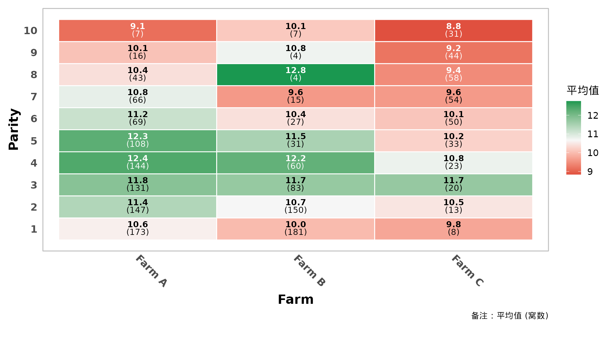
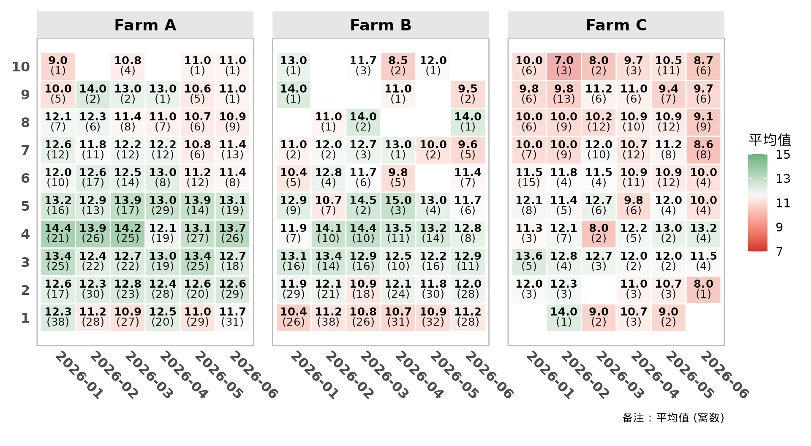
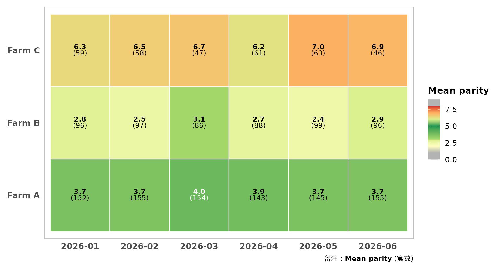
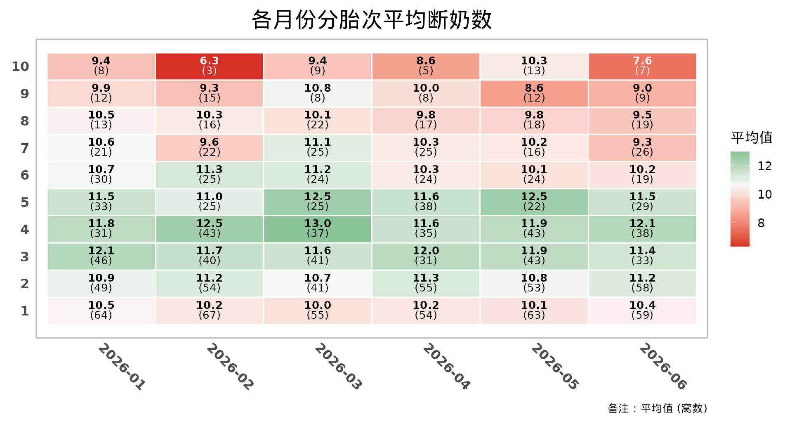
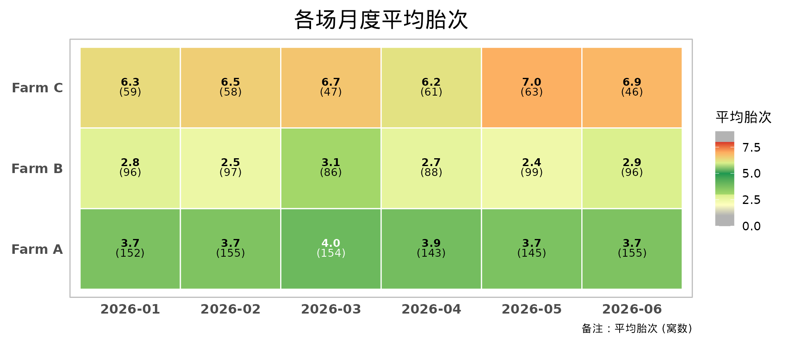
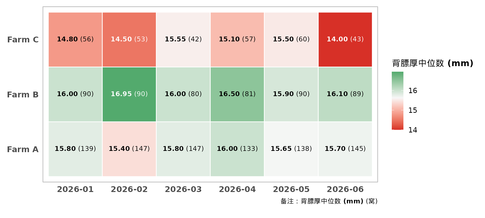
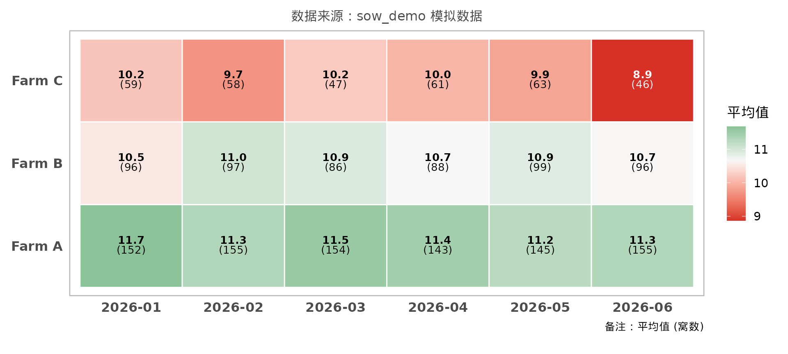

pigheatmap 把”按胎次 ×
月份（或场区、品系……）汇总某项生产指标，再画成带数值标注的热图”
这件事封装成一个函数。本文用包内的模拟数据 sow_demo
演示主要用法。
head(sow_demo)
#> month farm parity born_alive weaned backfat
#> 1 2026-01 Farm A 1 13 13 NA
#> 2 2026-01 Farm A 1 15 14 17.2
#> 3 2026-01 Farm A 1 12 10 16.0
#> 4 2026-01 Farm A 1 11 11 19.4
#> 5 2026-01 Farm A 1 11 10 15.1
#> 6 2026-01 Farm A 1 9 9 15.8汇总数据：summarise_heatmap_data()
summarise_heatmap_data() 按 X ×
Y（以及可选的分面变量）分组，计算每个格子的统计值
stat_value 和有效样本数 count。它是
plot_performance_heatmap() 的第一步，单独导出
方便拿到汇总表另作他用，比如导出到 Excel 或写进报告。
# 各场、各胎次的平均断奶数
summarise_heatmap_data(sow_demo, x_var = "farm", y_var = "parity", fill_var = "weaned")
#> # A tibble: 30 × 4
#> farm parity stat_value count
#> <chr> <int> <dbl> <int>
#> 1 Farm A 1 10.6 173
#> 2 Farm A 2 11.4 147
#> 3 Farm A 3 11.8 131
#> 4 Farm A 4 12.4 144
#> 5 Farm A 5 12.3 108
#> 6 Farm A 6 11.2 69
#> 7 Farm A 7 10.8 66
#> 8 Farm A 8 10.4 43
#> 9 Farm A 9 10.1 16
#> 10 Farm A 10 9.14 7
#> # ℹ 20 more rows
# 用中位数，并剔除样本数少于 10 窝的格子
summarise_heatmap_data(
sow_demo, "farm", "parity", "weaned",
summary_stat = "median", min_count = 10
)
#> # A tibble: 25 × 4
#> farm parity stat_value count
#> <chr> <int> <dbl> <int>
#> 1 Farm A 1 11 173
#> 2 Farm A 2 12 147
#> 3 Farm A 3 12 131
#> 4 Farm A 4 12 144
#> 5 Farm A 5 12 108
#> 6 Farm A 6 11 69
#> 7 Farm A 7 11 66
#> 8 Farm A 8 10 43
#> 9 Farm A 9 10 16
#> 10 Farm B 1 10 181
#> # ℹ 15 more rows绘制热图：plot_performance_heatmap()
plot_performance_heatmap()
在汇总的基础上完成绘图：格子里用富文本标注统计值和样本数，
颜色映射有三种模式（plot_type）：
-
"general"（默认）：红-白-绿双向渐变，中间值默认为统计值的均值； -
"parity"：内置的胎次分段色阶，按胎次数值着色（3~5 胎绿色、两端灰色）， 用于fill_var本身就是胎次的场景，例如看各场、各月的平均胎次（胎龄结构）， 详见vignette("segmented-scales")； -
"segmented"：自定义分段色阶，适合背膘厚、首配日龄等有经验最优区间的性状。
最简单的用法只需要指定数据、X、Y 和要汇总的指标：
# 通用红-白-绿渐变：各场、各胎次的平均断奶数
plot_performance_heatmap(
sow_demo,
x_var = "farm", y_var = "parity", fill_var = "weaned",
y_axis_type = "parity",
x_lab = "Farm", y_lab = "Parity"
)
# 按场分面 + 按样本量调节透明度（高胎次窝数少，格子更透明）
plot_performance_heatmap(
sow_demo,
x_var = "month", y_var = "parity", fill_var = "born_alive",
facet_vars = "farm",
y_axis_type = "parity",
alpha_by_count = TRUE,
theme_args = list(x_axis_angle = -45, strip_text_size = 14)
)
# 胎次分段配色：各场、各月的平均胎次（3~5 胎为绿色，偏低为黄色，偏高为橙红色）
plot_performance_heatmap(
sow_demo,
x_var = "month", y_var = "farm", fill_var = "parity",
plot_type = "parity",
fill_lab = "Mean parity",
theme_args = list(x_axis_angle = 0)
)
中文列名与胎次自动识别
实际数据里的列名通常是中文。y_axis_type 默认为
"auto"：只要列名匹配
auto_detect_pattern（默认为”胎次”），就会自动使用从 1
开始的整数刻度，不必手动指定。
sow_cn <- data.frame(
"年月" = sow_demo$month,
"场区" = sow_demo$farm,
"胎次" = sow_demo$parity,
"断奶数" = sow_demo$weaned,
check.names = FALSE
)
plot_performance_heatmap(
sow_cn,
x_var = "年月", y_var = "胎次", fill_var = "断奶数",
title = "各月份分胎次平均断奶数"
)
用胎次色阶看各场的胎龄结构：
plot_performance_heatmap(
sow_cn,
x_var = "年月", y_var = "场区", fill_var = "胎次",
plot_type = "parity",
fill_lab = "平均胎次",
title = "各场月度平均胎次",
theme_args = list(x_axis_angle = 0)
)
统计量、样本量阈值与格子标签
plot_performance_heatmap(
sow_demo,
x_var = "month", y_var = "farm", fill_var = "backfat",
summary_stat = "median", # 也可以是 "sd"、"max" 或自定义函数
min_count = 30, # 少于 30 窝的格子不显示
text_layout = "h", # 数值和样本数放在同一行
label_digits = 2,
count_label = "窝",
fill_lab = "背膘厚中位数 (mm)",
theme_args = list(x_axis_angle = 0)
)
继续用 ggplot2 修改
返回值是普通的 ggplot 对象，可以继续叠加图层或主题；汇总数据保存在
p$data 中。
p <- plot_performance_heatmap(
sow_demo, "month", "farm", "weaned",
theme_args = list(x_axis_angle = 0)
)
p + ggplot2::labs(subtitle = "数据来源：sow_demo 模拟数据")
head(p$data)
#> # A tibble: 6 × 7
#> month farm stat_value count label_text .alpha .label_color
#> <chr> <chr> <dbl> <int> <chr> <dbl> <chr>
#> 1 2026-01 Farm A 11.7 152 <b>11.7</b><br>(152) 1 black
#> 2 2026-01 Farm B 10.5 96 <b>10.5</b><br>(96) 1 black
#> 3 2026-01 Farm C 10.2 59 <b>10.2</b><br>(59) 1 black
#> 4 2026-02 Farm A 11.3 155 <b>11.3</b><br>(155) 1 black
#> 5 2026-02 Farm B 11.0 97 <b>11.0</b><br>(97) 1 black
#> 6 2026-02 Farm C 9.71 58 <b>9.7</b><br>(58) 1 black导出图片
导出含中文的图片前，先调用一次 enable_cn_font()，并让
dpi 与 ggsave() 一致， 详见
vignette("theme-and-fonts")。
enable_cn_font(dpi = 300)
ggplot2::ggsave("heatmap.png", p, width = 12, height = 7, dpi = 300)